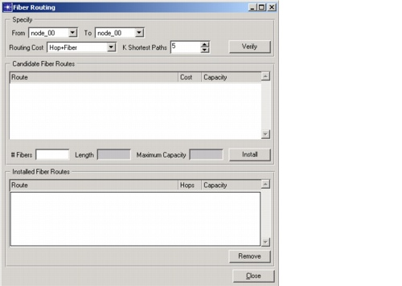

Creating a Baseline Scenario > Configuring Cable Splitters and Fiber Routes > Fiber Routing
Fiber Routing
A cable splitter configures fibers at the OTS layer and thereby creates links at the OMS layer; fiber routing enables you to configure fibers at the OMS layer and thereby create links at the OCH layer.
Procedure 3-5 Creating a Fiber Route
- If you have not already done so, define the network topology.
- Choose Design > Fiber Routing.
The Fiber Routing dialog box appears.
Figure 3-20 Fiber Routing Dialog Box

- Under Specify, select the From and To nodes between which you want to create a fiber route.
- Select the Routing Cost for calculating the shortest paths, and the number of shortest paths to add to the candidate list (K Shortest Paths). For more information, see Routing Cost.
- Click Verify to calculate the candidate paths.
The Candidate Fiber Routes table shows the routes, costs, and capacities of the candidate routes.You can view a route in the network by selecting it in this table.
- In the # Fibers fields (under Candidate Fiber Routes), enter the number of fibers to be lit (using the default WDM line system). The number of fibers can be zero; in this case the fiber route is established, but no fibers are equipped yet.
- Click Install to establish the fiber route. The Installed Fiber Routes table at the bottom of the dialog box shows all established fiber routes.
End of Procedure 3-5
After you create the fiber route, a new link is created in the OCH layer. You can handle this link like any other OCH link: you can specify lit fibers on it using the Link Browser, route traffic over it, or expand it using the dimensioning or grooming algorithms.
Procedure 3-6 Removing a Fiber Route
Note—You can clear a fiber route only if no traffic is accommodated on that route.
End of Procedure 3-6
| Home © 1987-2007 OPNET Technologies, Inc. All Rights Reserved. This software may be covered by one or more U.S. Patents. See complete patent notice in the Legal Notices section. OPNET Support Center |